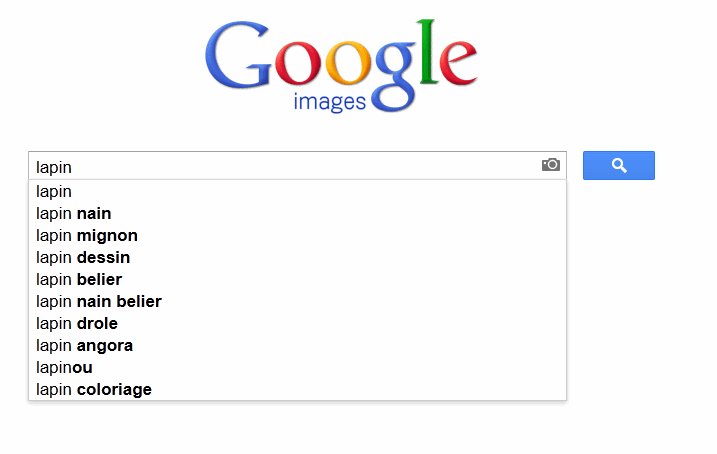
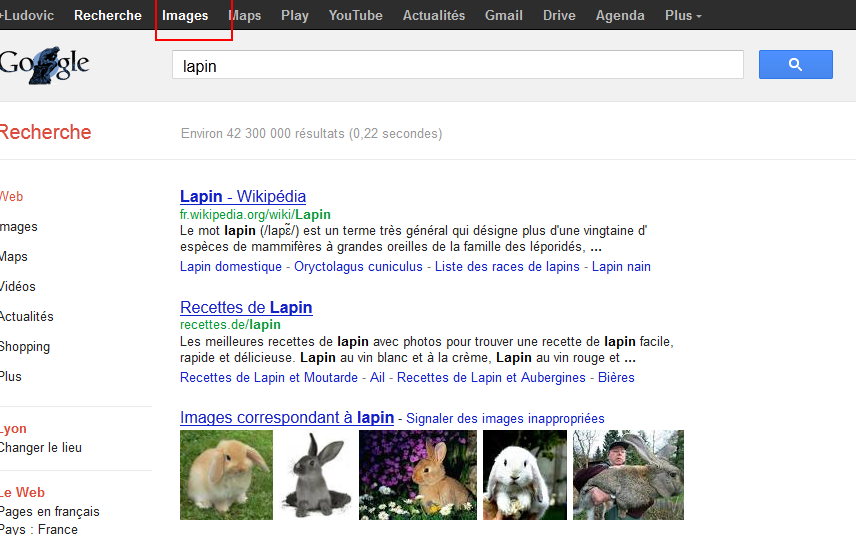
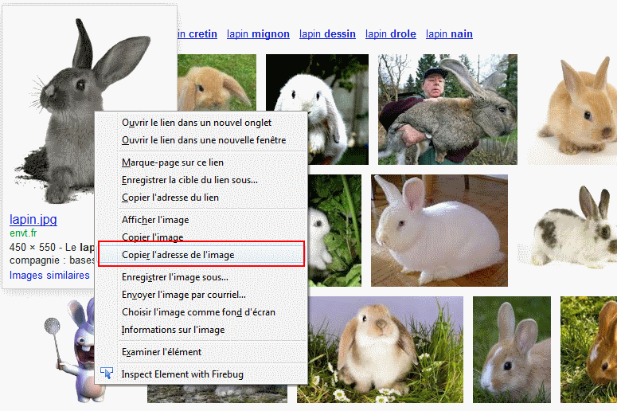
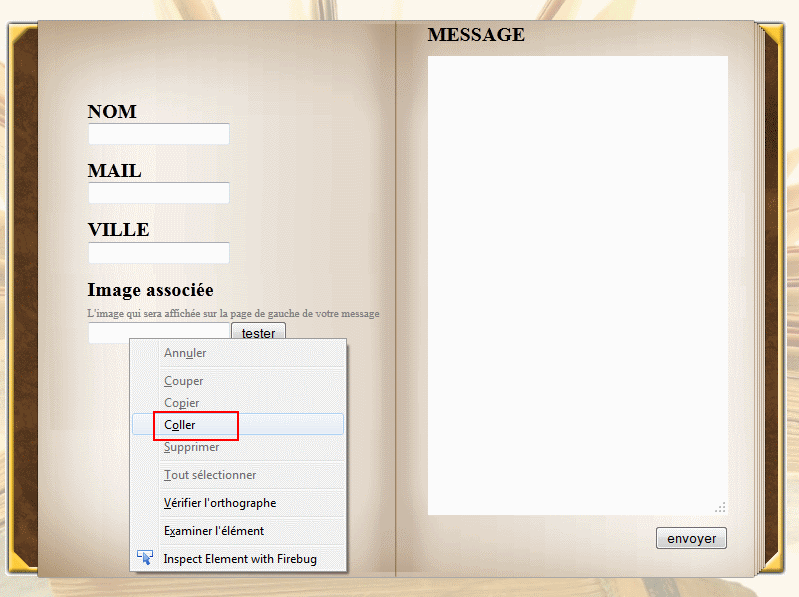

2) Tappez une description du type d'image que vous voulez (exemple : "Lapin")
<

3) Cliquez sur le menu "image" (en haut de la barre d'outil de google)

4) Parcourez la liste d'image. une fois l'image désirée trouvée, cliquez avec le bouton droit de la souris dessus et choisissez : "copier l'adresse de l image"

5) Afficher la page du livre d'or et "coller" l'adresse de l'image (bouton droit dans la zone de texte et sélectionner "coller")

6) Cliquer ur le boutont "tester" pour vérifier le rendu de l'image